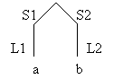
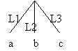

Rigal is available on either Solaris/SPARC or Linux/x86 platforms. In order to use either one you must set the rig environment variable:
setenv rig /home/unsupported/solaris/rsys gives access to the Solaris version
setenv rig /home/uni1/jeffery/rigal/bin gives access to the Linux version (courtesy of Dr. Jeffery)
Here is my .rigal file (you could put this into .cshrc if you wish)
if (`uname -s` == "SunOS") then
echo Solaris
setenv rig /home/unsupported/solaris/rsys
else if (`uname -s` == "Linux") then
echo Linux
setenv rig /home/uni1/jeffery/rigal/bin
else if
echo "What OS is this?"
endif
alias rc $rig/rc
alias ic $rig/ic
set path = ($path $rig)
This will enable you to run the compiler (rc) and the interpreter (ic) from any directory.
Rigal programs consist of a single file of any number of rule (function) definitions. Each rule is introduced by a # sign followed by an identifier that is the name of the rule. It is terminated by a double # (Note: Identifiers are case sensitive):
#Rule1
�
##
#Rule2
�
##
�
The first rule is the first called when the interpreter runs the file (like �main� in C). Any rule can call any other � they do not have to be �declared� before they are used.
Basic data are atoms which can either be symbols (identifiers) or numbers (integers only).
e.g. X, anAtom, 32, -124 are all atoms.
Structured types are the list and the tree.
A list is recursively defined as a sequence of either atoms or lists (or trees � see below) and is represented by the brackets (. and .) surrounding the sequence separated by spaces. Thus (. a b c .) is a list of three atoms, and (. (.a .) (.b.) (.c.).) is a list consisting of three lists, each of which contains one atom. Lists may be arbitrarily complex.
A tree is like a list in that it can contain arbitrarily
nested subtrees, and the leaves of the tree are atoms. The differences are that
subtree branches must be uniquely labeled, the brackets are <. and .> and the
sequence of subtrees are separated by commas. Thus
<. L1 : a, L2
: b, L3 : c .> is a tree consisting of three leaves, and
<. S1 : <. L1 : a .>, S2 : <. L2 : b .>.> is a tree with two branches labeled S1 and S2 leading to two subtrees consisting of a single leaf. In pictures, these two trees are:


In addition, nodes can be labeled. So N::<. � .> labels the subtree (not just the branch leading to it) with N.
A rule has a name, following the initial # sign, any number of parameters (or alternative parameter sets � see below) and executable code which consists of a sequence of assignments and/or I/O statements, separated by semi-colons. Variables, including those in parameter specifications are identifiers that start with a $ sign. Thus the rule:
#R1
$X := 3;
PRINT $X
##
assigns 3 to the variable X and then prints this value. When there are parameters, these are written after the rule name and any executable code must be placed between slashes:
#Go
#R2(a b)
##
#R2 $X $Y
/PRINT $X;
PRINT $Y/
##
Note that a rule must call R2 and pass arguments to it. All variables have local scope, and are dynamically typed, i.e. they can pick up the type of whatever is assigned to them without declarations being necessary:
#Go
#R3(a)
##
#R3 $X
/ $X := 1;
PRINT $X;
$Y := (. a b c .)
PRINT $Y /
##
This program prints 1, followed by the list (. a b c .); the argument passed to R2 is overwritten by the assignment of 1 to $X.
Code may also be embedded between parameters:
#Go
#R4(a)
##
#R4 $X / $X := 1 / $Y / $Z := $X + $Y; PRINT $Z /
##
$X and $Y are the parameters. This prints 3 because the value passed to R4 through $X is overwritten with 1.
Rules can be called recursively. The base case can be distinguished by a conditional test using the IF form:
#Go
#R5(0)
##
#R5 $N
/PRINT $N;
IF $N < 10 -> #R5($N + 1) FI/
##
This program prints the sequence 0 through 10.
Rigal has a standard set of arithmetic operations: +, -, *, /. It also has a number of operations to support list and tree processing. Adding an item to the end of a list is done with !. and appending two lists together is done with !!:
#Go
#R6( (. a b c .) )
##
#R6
$L / $M := $L !. d; $N := $M !! (. e f .); PRINT $N/
##
This prints the list (. a b c d e f .)
Trees can be concatenated with the operation ++:
#Go
#R7 ( <. B1:<. L1 : a, L2 : b .> .> )
##
#R7
$T
/ $U := $T ++ <. B2:<. L1 : c, L2 : d .> .>; PRINT $U/
##
This prints the tree
<. B1 : <.L1 : a ,L2 : b .>, B2 : <.L1 : c ,L2 : d .> .>
Rigal can also pass arguments to rules via pattern parameters, that specify the structure of the argument. A pattern can be a simple variable, which matches anything. Thus all the above examples pass their arguments through a simple variable pattern. A pattern can be a constant, and then the argument is expected to be that constant value. Thus:
#Go
#R8 (1 a 2)
##
#R8
$n1 a $N2
/PRINT �Matched�/
##
prints �Matched� since 1 matches with $N1, a matches with a and 2 matches with $N2. If any argument fails to match, the rule returns NULL. Alternative matches can be specified separated by ;; :
#Go
#R8 (1 b 2)
##
#R9
$N1 a $N2
/PRINT 'Matched with a'/ ;;
$N1 b $N2
/PRINT 'Matched with b'/
##
prints 'Matched with b' since the first set of patterns fails. Patterns can also specify lists or trees, and these can contain variables and/or constants as necessary. The following set of rules illustrates some examples.
#Go
#R10( (. a b c .) );
#R11( (. a (. b .) c .) )
#R12( <. l1 : a, l2 : 2 .> )
#R13 ( <. l1 : <. l1 : a, l2 : b .>, l2 : <. l1 : a .> .> )
##
#R10
(. a $L $M .)
/PRINT $L; PRINT $M/
##
#R11
(. a $L c .)
/PRINT $L/
##
#R12
<. l1 : a, l2 : $T .>
/PRINT $L; PRINT $T/
##
#R13
<. l1 : <. l1 : $V1 / PRINT $V1/,
l2 : $V2 /PRINT $V2/ .>, l2 : $T1 .>
/PRINT $T1/
##
Note that a tree pattern can only have variables in the node (subtree) positions, not in the labels on those subtrees.
Special forms are available for matching with lists and trees of arbitrary size. In each case, a sequence of items in a list or subtrees in a tree can be specified. The form (* � *) means match with a list of any length, including zero (the empty list). The form (+ � +) means there must be at least one item. Similarly, <* � *> is a tree with any number of subtrees, and <+ � +> is a tree with at least one subtree. The following examples illustrate these. Note that executable code can be embedded in these patterns.
#Go
#R14( (. a b c .) );
#R15( (. d e f .) );
#R16(g h i)
##
#R14
(. (* $Item /PRINT $Item/ *) .)
##
#R15
(. d (+ $Item /PRINT $Item/ +) .)
##
#R16
(* $Item /PRINT $Item/ *)
##
Note the special form for matching a sequence of arguments to a rule (R16).
#Go
#R17( <. L1: a, L2: b, L3: c .> );
#R18(<. L1:<.L2:<.L3:a.>.>.> )
##
#R17
<* L1:$V1 /PRINT $V1/,
$Lab:$VS /PRINT $Lab; PRINT $VS .>
##
#R18
<* $Lab /PRINT $Lab/ : #R18 *> ;;
$leaf
##
R18 is an example of a recursive rule call which will fail when it is passed a leaf node. The alternative �catches� the leaf and stops the recursion. The labels are printed in reverse order (L3, L2, L1) when the recursion is unwound.